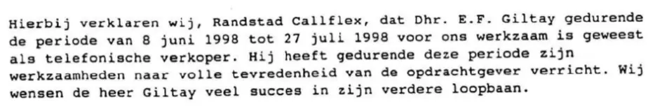

Prueba · Recomendación
Recomendación de Randstad Callflex para Giltay, 20 de mayo de 1999
El pasaje
«Por la presente, nosotros, Randstad Callflex, declaramos que el señor E.F. Giltay ha trabajado para nosotros como vendedor telefónico durante el período del 8 de junio de 1998 al 27 de julio de 1998. Durante dicho período desempeñó sus tareas a plena satisfacción del cliente. Deseamos al señor Giltay mucho éxito en su carrera futura». Página 1, el texto de la carta. Traducido del neerlandés; el texto original figura a continuación.
Texto original
“Hierbij verklaren wij, Randstad Callflex, dat Dhr. E.F. Giltay gedurende de periode van 8 juni 1998 tot 27 juli 1998 voor ons werkzaam is geweest als telefonische verkoper. Hij heeft gedurende deze periode zijn werkzaamheden naar volle tevredenheid van de opdrachtgever verricht. Wij wensen de heer Giltay veel succes in zijn verdere loopbaan.” La carta no nombra al cliente; habla solo de «de opdrachtgever» (el cliente).

Por qué importa este documento
En esta carta del 20 de mayo de 1999, Randstad Callflex, la empresa de trabajo temporal que tenía contratado a Giltay en el verano de 1998, declara que él desempeñó su trabajo a plena satisfacción del cliente. Su empleador era, por tanto, Randstad y no Casema, donde trabajaba cedido por la empresa de trabajo temporal.
Ello contradice la calificación que el ministro de Defensa dejó consignada sobre Giltay y que sigue hoy en línea, en el informe público del Defensor del Pueblo de los Países Bajos (Nationale ombudsman) de 1999. En él se lee que Giltay habría sido despedido de Casema al cabo de tres días por «comportamiento irritante e inadaptado». Sin embargo, Casema no podía despedirlo, y tampoco lo echaron al cabo de tres días: permaneció allí siete semanas, hasta finales de julio de 1998. Giltay envió la carta al Defensor del Pueblo como anexo a finales de mayo de 1999. El informe de diciembre no la menciona. El ensayo opone a esa calificación considerables pruebas en contrario, entre ellas recomendaciones profesionales de las empresas en las que había trabajado. Esta carta es una de ellas.
Procedencia
- Documento
- Carta de recomendación (declaración), una página
- Remitente
- Randstad Callflex, Steenvoordelaan P 25, 2284 KA Rijswijk
- Destinatario
- E.F. Giltay, La Haya
- Fecha
- 20 de mayo de 1999
- Asunto
- Confirmación del trabajo como vendedor telefónico del 8 de junio de 1998 al 27 de julio de 1998
- Firmado
- Randstad Callflex; la firma y el nombre que figura debajo están tachados en la copia publicada
- Registro
- Forma parte del grupo Randstad; registro mercantil de Ámsterdam n.º 33154723; número de licencia CBA/T 91.1644; NEN-ISO 9001/ISO 9001 C-93032
- Idioma
- Neerlandés
- Conservado por
- Archivo del autor
- Véase también
- Informe 1999/507 del Defensor del Pueblo de los Países Bajos, 17 de diciembre de 1999Giltay al Defensor del Pueblo de los Países Bajos, 13 de marzo de 2018
Citado en:
- el ensayo «La prohibición cayó, el libro quedó en pie» en los capítulos (3) «Lo que revela el libro: el encubrimiento en torno a Srebrenica», (7) «Ninguna respuesta sobre el fondo» y (10) «Grietas en el muro»
- la sección de voces bajo el epígrafe «Luz de gas».
Documento: https://
Modificado por última vez el 13 de septiembre de 2026, consultado el 27 de noviembre de 2026.

Esta página es una ficha de prueba del libro El general del encubrimiento de Edwin Giltay y del sitio web que lo acompaña.